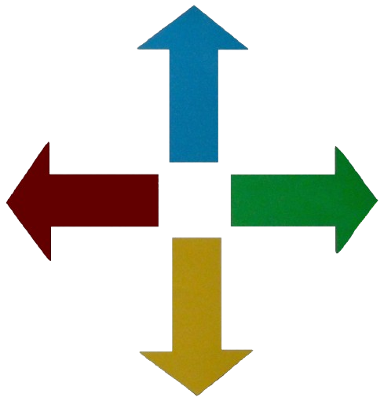

REGLES DU JEU
Sokojojo est un jeu de réflexion où le joueur incarne un personnage chargé de déplacer des caisses sur des emplacements cibles dans un entrepôt. L'objectif est de placer toutes les caisses sur les emplacements désignés en un minimum de mouvements.
ELEMENTS DU JEU
- Le joueur : représenté généralement par un petit personnage.
- Les murs : obstacles fixes que le joueur ne peut ni traverser ni déplacer.
- Les caisses : blocs que le joueur peut pousser, mais pas tirer.
- Les emplacements cibles : positions spécifiques où les caisses doivent être déposées.
REGLES DE DEPLACEMENT
- Le joueur peut se déplacer horizontalement ou verticalement (haut, bas, gauche, droite).
- Le joueur peut pousser une seule caisse à la fois s'il se déplace vers elle et qu'il y a un espace libre derrière.
- Le joueur ne peut pas :
- Traverser les murs ou les caisses.
- Pousser plusieurs caisses en même temps.
- Tirer les caisses.
OBJECTIF
- Le joueur doit placer toutes les caisses sur les emplacements cibles.
- Une partie est considérée comme gagnée lorsque chaque caisse repose exactement sur un emplacement cible.
DEFAITE
- Si le joueur se retrouve bloqué car il pousse une caisse dans un coin ou contre un mur où il est impossible de la bouger ensuite il a perdu.
- La réflexion est nécessaire pour éviter de bloquer l’accès aux caisses ou aux emplacements cibles.
CONTROLES

Utilisez les touches directionnelles pour déplacer le personnage dans les quatre directions.
Vous pouvez pousser les caisses en vous déplaçant vers elles, mais attention:
- Vous ne pouvez pousser qu'une caisse à la fois
- Vous ne pouvez pas tirer les caisses
- Une caisse bloquée contre un mur ou une autre caisse ne peut plus être bougée dans cette direction